Building a daily super-app (WIP)

Founding Designer with 7 engineers over 18 months (and continuing). Designed the entire iOS product + brand experience, contributed to product strategy + hiring, and built a robust design culture in the team.
Every day, we juggle priorities across apps and people. Hero, the world's first Daily Assistant, makes life easier in 3 ways:
Unified Life View: combines calendars, reminders, notes, groceries, weather, news, search and GPT.
Multi-player: sharing availability, reminders, and notes with partners, family, and friends.
Voice-powered: voice UX updates the UI as you speak, completing tasks up to 10X faster.
Users use Hero as a 'superpower' for their busy lives.
Foundation and early insights
When I joined the team in May '23 as employee #1 in the US, the founders had already tested a crude MVP. My task on day 1 was to help the team build upon this foundation, and design an all new app from scratch over the next year. We also decided on core design principles to guide decision-making.
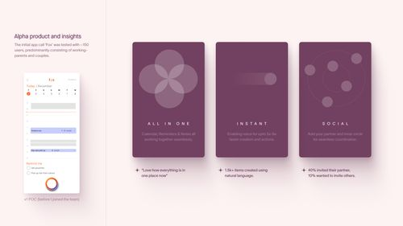
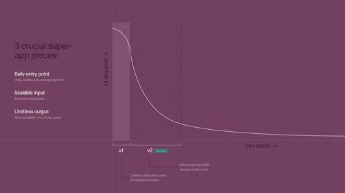
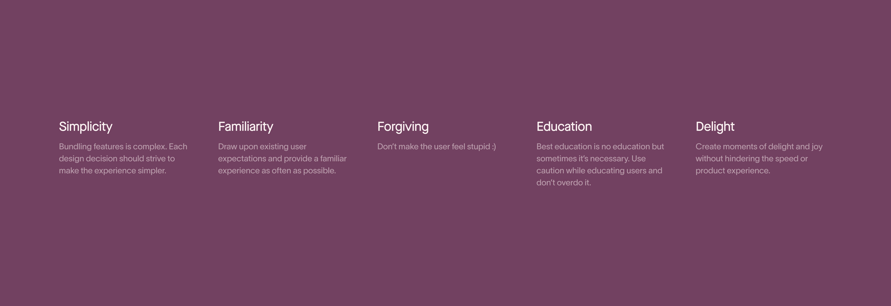
Deciding the core content interaction
One of the core decisions we made early on was to get rid of any tabs/navigation and build a free-flowing feed of blocks. We did NOT want to introduce a new tab every time we introduced a new feature. Key considerations: Swipe threshold velocity, snapping vs stacking cards, scroll within scroll, and expansion/collapse logic.
A color-system foresight that saved us time building dark-mode
I created a color system with 2 key aspects: Fewer choices for easy decision making, and a robust auto-switch logic within each color to work on dark mode.
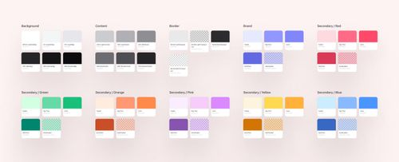
Calendar: The anchor element
The app is meant to be a daily use-case and hence calendar is the anchor element. We look at calendar as a surface within which we can bring in seamless integrations. Along with scheduling events, users can see weather, others' availability & reminders.
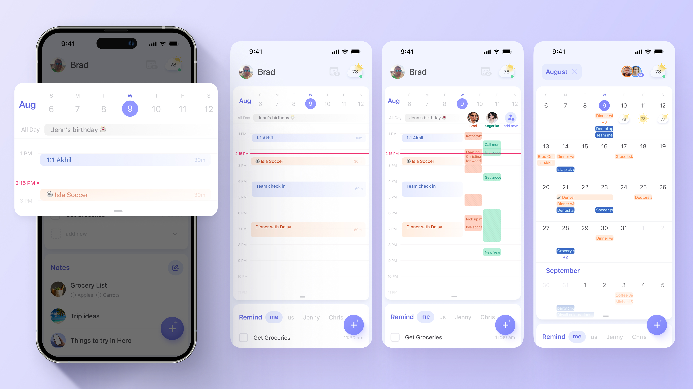
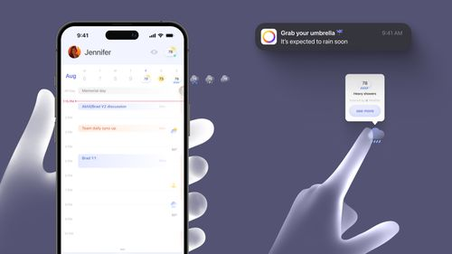
Reminders: Going social
What differentiates Hero Reminders is the power of integrations. We empower users to remind their family/friends while also providing features such as 'comments' and recurring reminders. Reminders is one of the most loved features.
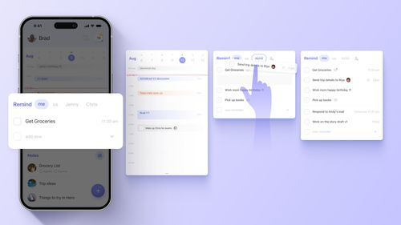
Notes: Driven by AI & optimized for use-cases
The goal with Hero Notes is not to compete with conventional note-taking apps. The core idea is to enable users get things off their mind instantly and collaborate. We integrated Instacart API & auto-categorization for grocery lists and Perplexity for saving answers as notes. Each note gets a genAI cover image.
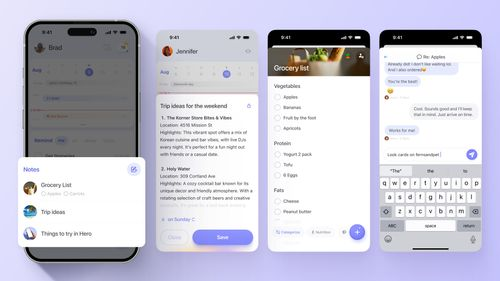
Designing for voice interactions
Voice is the most powerful aspect. Users finish actions up to 10x faster (e.g. event scheduling).
Initial approach: Interface for seamless switching between voice and manual editing. System acted as guided-language interface. Although functioning, the feature was limited.
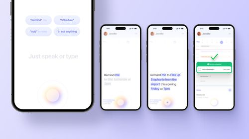
Initial approach
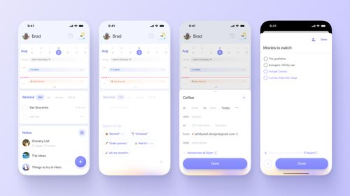
LLM-driven approach

Daily briefing: A delightful summary of your day
Daily Briefing showcases the power of all integrations. Users listen to upcoming schedule, weather update, news interests, and daily motivation. The experience is audio based with soothing music & smooth animations.

Cracking the onboarding code
Onboarding was a tough nut to crack because Hero is almost a new category. We did ruthless prioritization, took feedback, and focused on 2-3 key features. We made it visually exciting with animations.
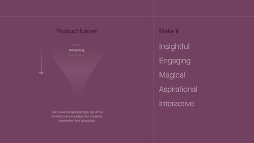
Mindful use of motion
We leveraged motion design to educate, guide, provide feedback, personalize, and speed up shipping. Rive published a case-study about how Hero utilizes animation.
User feedback & impact
We prioritized user-feedback at every stage. ~150 users talked 1-on-1 during beta testing. We balanced strong product thinking with feedback.

Challenges & Realizations
Messy process
Disorganization comes with being lean. Helped create formal feedback and hand-off processes.
Jack v/s Master
Had to build outside core-competencies, feeling of shipping imperfect things.
Constant change
App-category is new, things change everyday. Context switching is hard.
Challenging norms
Only designer, had to fight hard for subjective things. Developed thoroughness.
Messiness is a moat
Makes team fast and efficient early, but not scalable.
Great ideas from non-designers
Taking feedback from unconventional sources became a superpower.